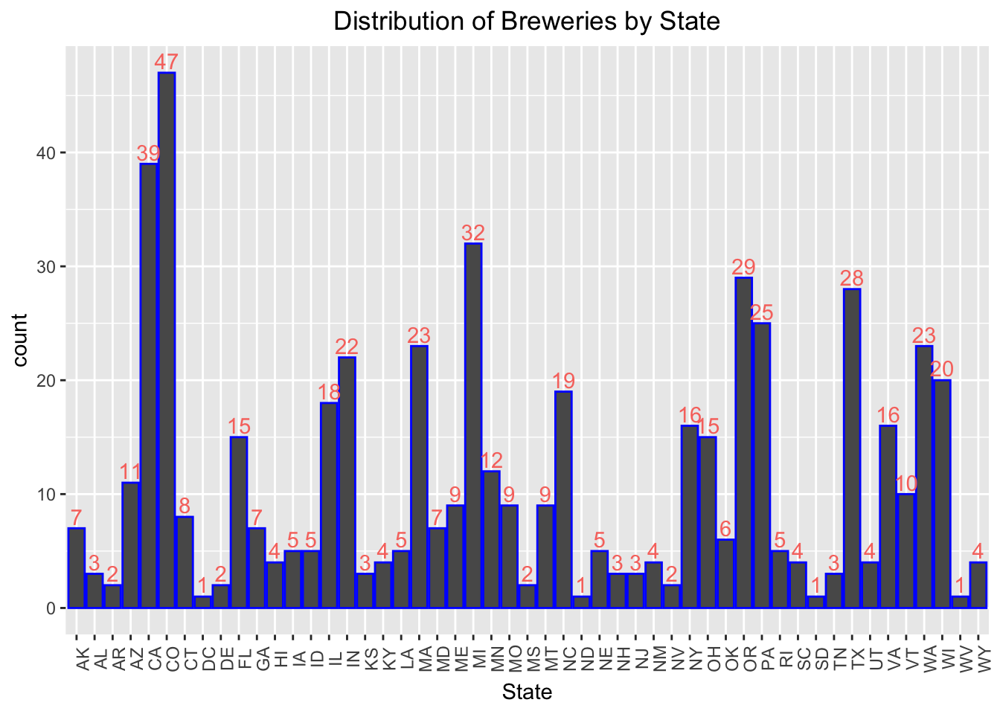
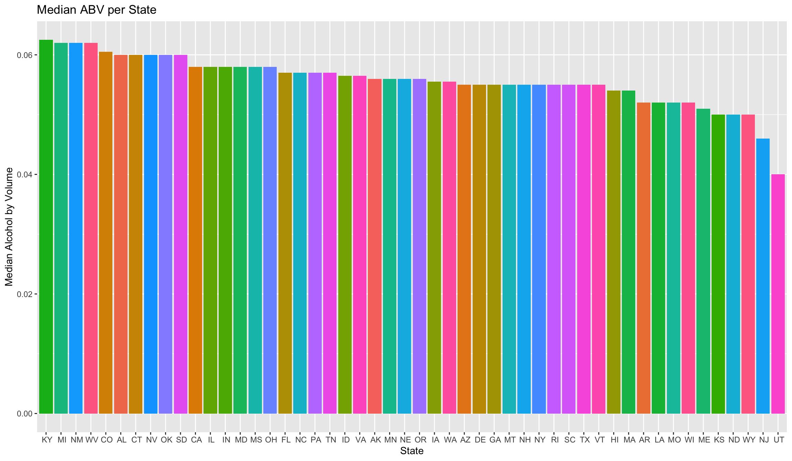
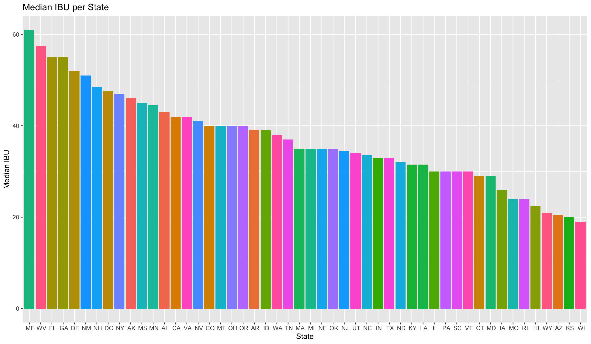
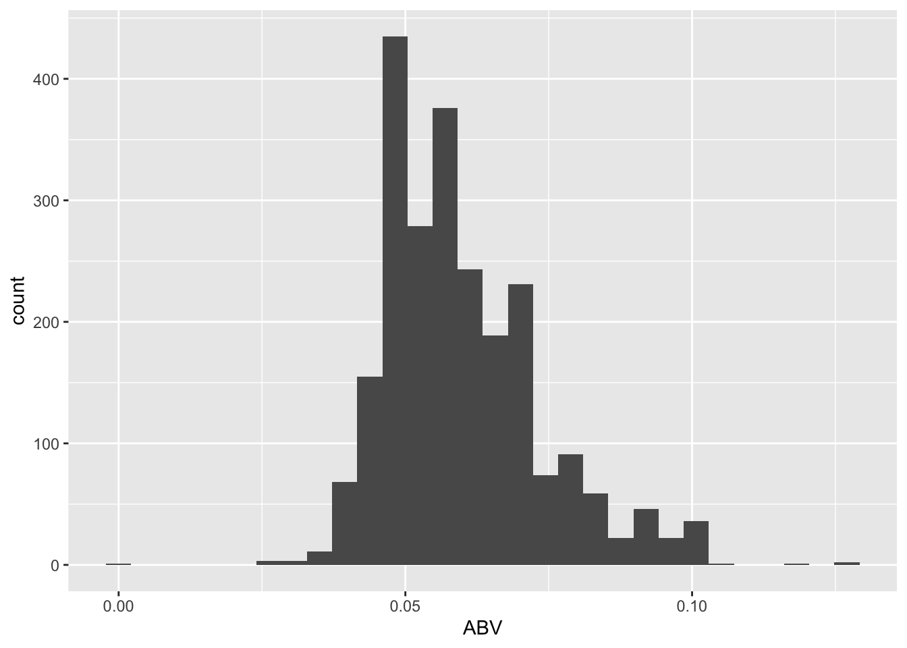
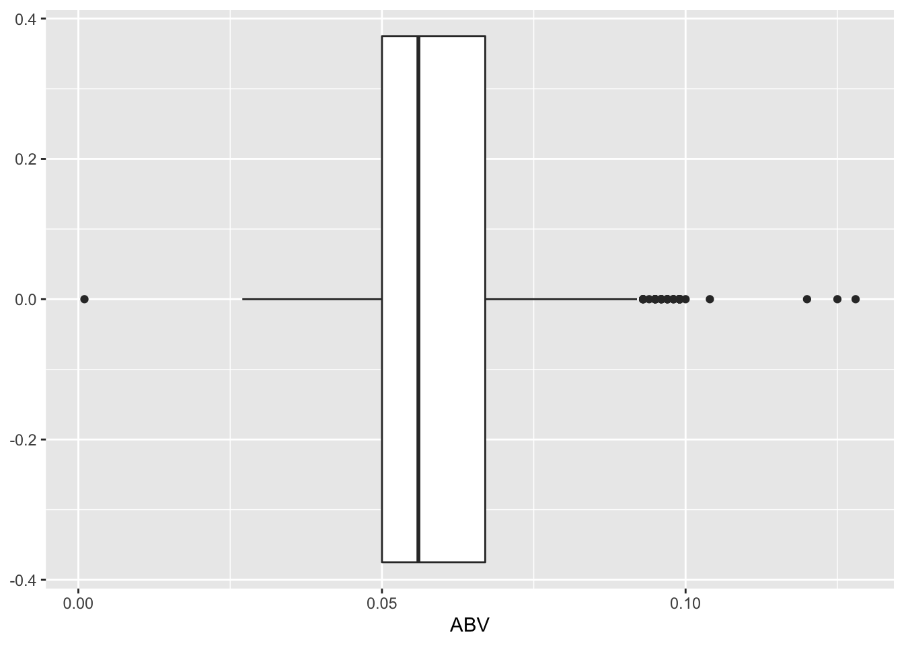
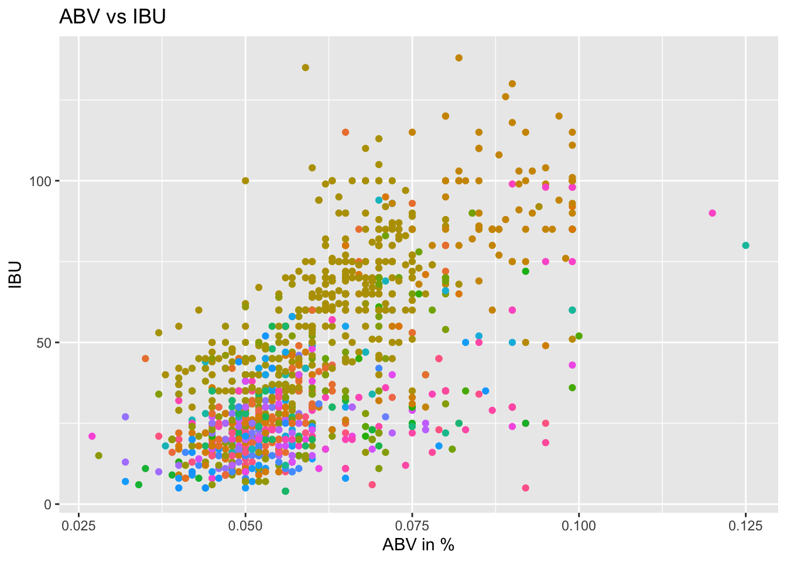
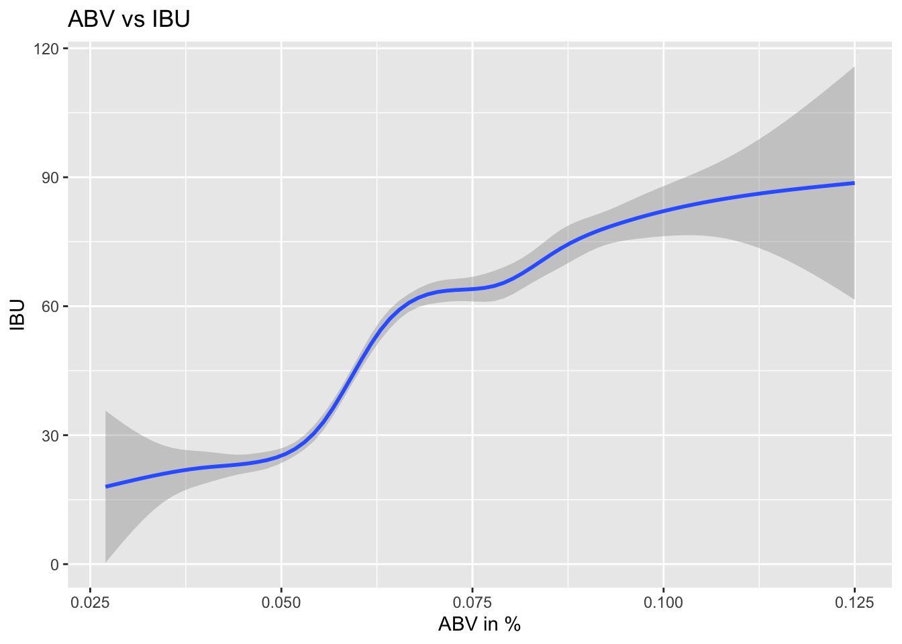

Testing the text output
beer_csv_loc <- "./Beers.csv"
breweries_csv_loc <- "./Breweries.csv"
# Read in data
Beer <- read.csv(beer_csv_loc, header = TRUE)
Breweries <- read.csv(breweries_csv_loc, header = TRUE)
#Beer = read.csv(file.choose(),header = TRUE) # read in company data
#Breweries = read.csv(file.choose(),header = TRUE) # read in company data
# Create a seperate data frame to store state data
### Note: This data set counts the district of columbia as a state
num_of_breweries_by_state <- data.frame(table(Breweries$State))
##### Celia Banks #####
#Begin prepare an interactive geo map of breweries by state
#set the map
leaflet() %>% addTiles()#add popup for brewery information
brewery_map <- Breweries %>% mutate(popup_info=paste(Name,"<br/>",City,"<br>",State,"<br>"))
#tweak the map with info layout, set circles smaller to enhance visual
#leaflet() %>% addTiles() %>% addCircleMarkers(data=brewery_map,
# lat=~Latitude,
# lng=~Longitude,
# radius=~1,
# popup=~popup_info)
#End prepare an interactive geo map of breweries by state#
#corresponding distribution plot of breweries by state
ggplot(brewery_map, aes(x=as.factor(State), color="blue")) +
geom_bar(color="blue") +
ggtitle("Distribution of Breweries by State") +
xlab("State") +
geom_text(stat='count', aes(label=after_stat(count)), vjust=-.25) +
theme(legend.position="none", axis.text.x = element_text(angle = 90)) +
theme(plot.title = element_text(hjust = 0.5))
#corresponding distribution plot of breweries by region
#ggplot(brewery_map, aes(x=as.factor(Region), color="green")) +
# geom_bar(color="green") +
## ggtitle("Distribution of Breweries by Region") +
# xlab("Region") +
# geom_text(stat='count', aes(label=after_stat(count)), vjust=-.25) +
# theme(legend.position="none", axis.text.x = element_text(angle = 90)) +
# theme(plot.title = element_text(hjust = 0.5))
##### END CB ######the last six observations to check the merged file
# Change column name of beer_data to match brewery_data to use as a primary key
colnames(Beer)[5] <- "Brew_ID"
# Merge two data bases using merge
full_brew_data <- merge(Breweries, Beer, by="Brew_ID")
# Rename columns 2 and 5 that were changed during the merge
colnames(full_brew_data)[2] <- "Brewery"
colnames(full_brew_data)[5] <- "Beer_Name"
# Print first 6 and last 6 observations
head(full_brew_data, n=6)## Brew_ID Brewery City State Beer_Name Beer_ID ABV IBU
## 1 1 NorthGate Brewing Minneapolis MN Pumpion 2689 0.060 38
## 2 1 NorthGate Brewing Minneapolis MN Stronghold 2688 0.060 25
## 3 1 NorthGate Brewing Minneapolis MN Parapet ESB 2687 0.056 47
## 4 1 NorthGate Brewing Minneapolis MN Get Together 2692 0.045 50
## 5 1 NorthGate Brewing Minneapolis MN Maggie's Leap 2691 0.049 26
## 6 1 NorthGate Brewing Minneapolis MN Wall's End 2690 0.048 19
## Style Ounces
## 1 Pumpkin Ale 16
## 2 American Porter 16
## 3 Extra Special / Strong Bitter (ESB) 16
## 4 American IPA 16
## 5 Milk / Sweet Stout 16
## 6 English Brown Ale 16tail(full_brew_data, n=6)## Brew_ID Brewery City State Beer_Name Beer_ID ABV
## 2405 556 Ukiah Brewing Company Ukiah CA Pilsner Ukiah 98 0.055
## 2406 557 Butternuts Beer and Ale Garrattsville NY Porkslap Pale Ale 49 0.043
## 2407 557 Butternuts Beer and Ale Garrattsville NY Snapperhead IPA 51 0.068
## 2408 557 Butternuts Beer and Ale Garrattsville NY Moo Thunder Stout 50 0.049
## 2409 557 Butternuts Beer and Ale Garrattsville NY Heinnieweisse Weissebier 52 0.049
## 2410 558 Sleeping Lady Brewing Company Anchorage AK Urban Wilderness Pale Ale 30 0.049
## IBU Style Ounces
## 2405 NA German Pilsener 12
## 2406 NA American Pale Ale (APA) 12
## 2407 NA American IPA 12
## 2408 NA Milk / Sweet Stout 12
## 2409 NA Hefeweizen 12
## 2410 NA English Pale Ale 12# Create two new tables where one has only ABV with no <NA>'s and the other
state_abv <- data.frame(State=full_brew_data$State, ABV=full_brew_data$ABV)
state_abv <- state_abv %>% drop_na(ABV)
# Do the same for IBU
state_ibu <- data.frame(State=full_brew_data$State, IBU=full_brew_data$IBU)
state_ibu <- state_ibu %>% drop_na(IBU)##state. Plot a bar chart
# Find the average ABV for the state_abv table
avg_state_abv <- ddply(state_abv, .(State), function(x) median(x$ABV))
colnames(avg_state_abv)[2] <- "Median_ABV" # Rename the column
# Drop DC. It's not a state....yet
avg_state_abv <- avg_state_abv[-c(8),] # DC is equal to position 8 on the table
# Order the states by Decending ABV content
avg_state_abv <- avg_state_abv[order(avg_state_abv$Median_ABV, decreasing=TRUE),]
# Find Average IBU
avg_state_ibu <- ddply(state_ibu, .(State), function(x) median(x$IBU))
colnames(avg_state_ibu)[2] <- "Median_IBU" # Rename column
# Order the states by IBU Decending
avg_state_ibu <- avg_state_ibu[order(avg_state_ibu$Median_IBU, decreasing=TRUE),]
# Plot Average Alcohol by Volume per state
ggplot(avg_state_abv, aes(x=reorder(State, desc(Median_ABV)), y=Median_ABV, fill=State)) +
geom_col(show.legend = FALSE, width=.9, position="dodge") +
ggtitle("Median ABV per State") +
xlab("State") +
ylab("Median Alcohol by Volume") 
# Plot Average International Bitterness Unit per State
ggplot(avg_state_ibu, aes(x=reorder(State, desc(Median_IBU)), y=Median_IBU, fill=State)) +
geom_col(show.legend = FALSE, width=.9, position="dodge") +
ggtitle("Median IBU per State") +
xlab("State") +
ylab("Median IBU")
# Get the State with the highest average ABV
#state_max_abv <- avg_state_abv[which.max(avg_state_abv$Median_ABV),] # KY
state_max_abv <- full_brew_data[which.max(full_brew_data$ABV),] # CO
state_max_abv[c(4,7)]## State ABV
## 384 CO 0.128# Get the State with the highest average IBU
state_max_ibu <- full_brew_data[which.max(full_brew_data$IBU),] # OR
state_max_ibu[c(4,8)]## State IBU
## 1857 OR 138#and other types of Ale. Use KNN.
6. Comment on the Summary stats and distribution of the ABV variable


##7. Is there an apparent relationship between the bitterness of the beer and its alcoholic content?

